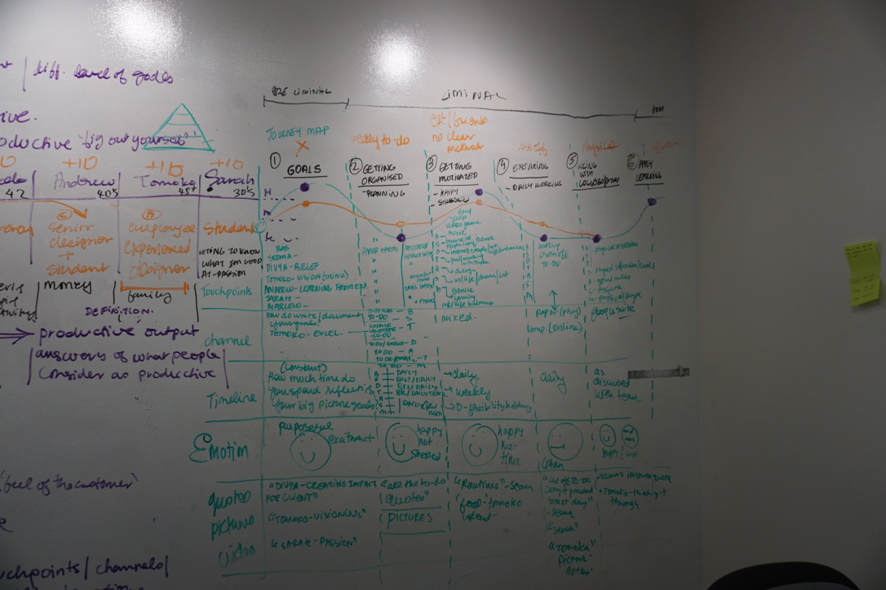

ABOUT THE PROJECT
Project Description
We explored this topic to understand how designers with and without experience are productive.
In general we explored how they define productivity while still being creative. Through the contextual
inquiries we understood how they approached work. Through the detailed interviews we understood what
is their priorities, motivations, routines, etc. We collected various artifacts and evidence which
supported their conversations.
Research Information
We conducted 2 contextual inquiries with a junior and senior designer. We then conducted 7 interviews
with designers with 10+ and with 1+ years of experience. We also conducted a survey with less experienced
designers.
